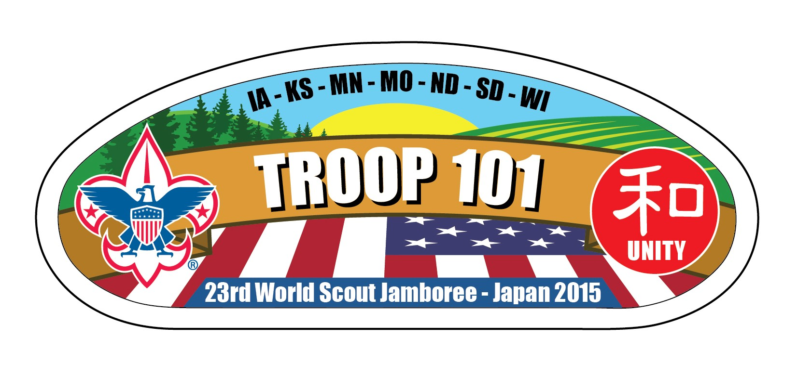

Troop 101 is a Boy Scout Troop operating out of Monticello, MN. We meet weekly on Monday evenings as a troop as well as participate in many special events. Troop 101 is the oldest troop in Monticello and strives to help boys from all walks of life. Stop by and check us out. We'd love to have another scout and we're sure you'd fit in and find something you enjoy in our programming. The BSA serves youth from 5th grade to the age of 18 and is completely boy led. Let your son learn leadership and life skills among his peers.